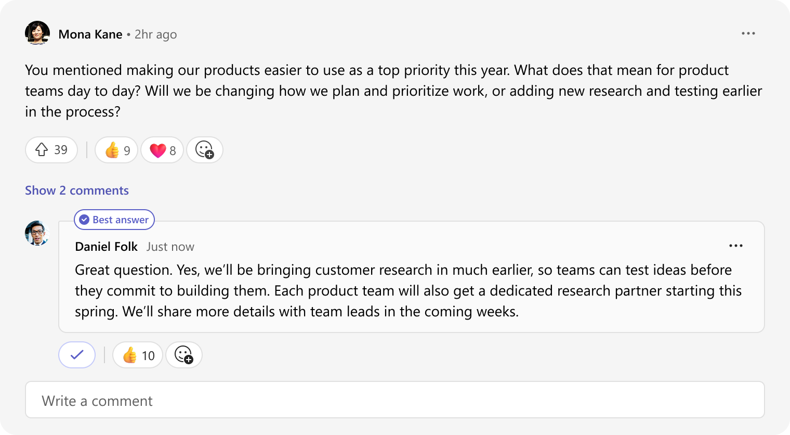
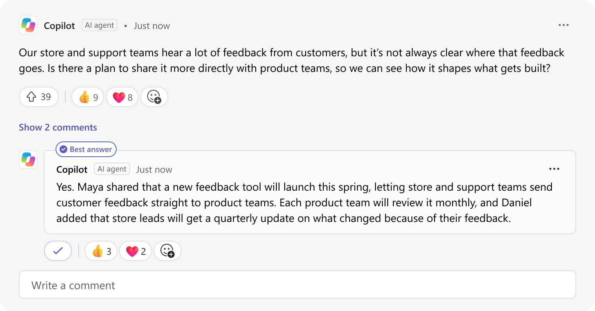
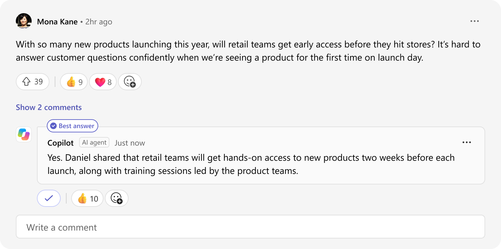
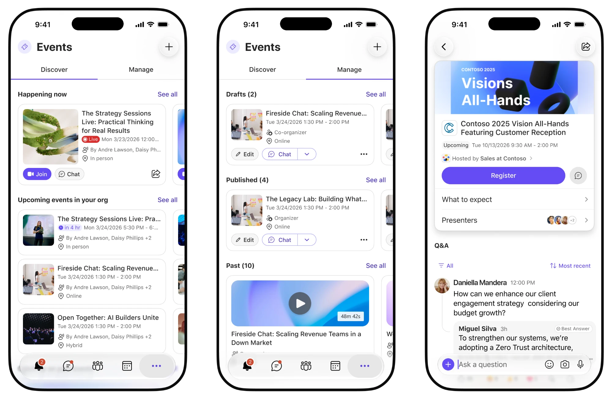

Teams
Events App
The Events app brings events from across Microsoft into one hub in Teams. Before, each event type lived in its own tool with fixed features, so organizers couldn’t mix and match. After unifying events in Viva Engage, I proposed bringing that approach to Teams and created the initial vision for the product. I contributed to early discovery and the creation flow, and led design for the event page, including Q&A with Copilot built in.

01 The problem
Too many ways to run an event
- Q&As, AMAs, live events, webinars, and town halls each lived in a different tool.
- Each tool had its own setup and its own set of features.
- Organizers couldn’t mix and match. If you wanted registration and moderated Q&A, you had to find the one tool that had both, if it existed. It would never cover the before, during, or after event experience fully.
- The Events app replaces all of them. Organizers choose the features they need, not a type.
02 The solution
One path for every event
Whether it’s a 50-person training or a company-wide town hall, every event should follow the same path. This made the experience easier to learn for organizers and gave attendees one place to go, no matter the event.
- Creation form
- Organizers set up the event and turn on the features they need.
- Draft
- A private event page is created so organizers can review and customize it before anyone sees it.
- Before
- Once published, attendees can register, read about the event, and submit questions.
- During
- The same page becomes the place to join and follow along live.
- After
- The recording, recap, and Q&A answers stay on the page for anyone who missed it.
03 The event page
One page for the whole event
I led design for the event page, the center of every event. It’s where attendees find details, register, and ask questions, where organizers manage everything behind the scenes, and where Copilot helps answer questions along the way.
The live event
Live Q&A
Same feed as the event page
Back to the event page
Event details, registration, recommended events, presenters, Q&A answered by Copilot, the live event, and the recording and recap afterward.
 Stage controls
Q&A moderation
Same feed as the event page
Back to the event page
Stage controls
Q&A moderation
Same feed as the event page
Back to the event page
Branding, registration and attendee tracking, presenter and co-organizer management, and Q&A moderation, with Copilot ready to answer.
04 Draft mode and branding
See it before your audience does
When an event is created, it starts as a draft. Organizers can preview exactly what attendees will see, then add their own branding before publishing.
Organizers can add a cover image and brand colors, and the page updates as they go. This gave organizers confidence before sharing their event with thousands of people.
05 Q&A with Copilot
Q&A that doesn’t end when the event does
Before, Q&A only existed during the live event. Questions that didn’t get answered were lost. I designed Q&A to carry through the whole event, with Copilot built in so every question can get an answer, even when no presenter is there to give one.
-
Before Answered by presenters
Attendees ask questions early, and presenters and organizers can answer them ahead of time.

-
During Answered by Copilot
During the event, people ask and expect answers in the moment. Copilot posts questions on its own and answers them as the event goes, so the feed keeps up with what’s happening on stage.

-
After Answered by Copilot
Once the event ends, Copilot answers open questions using the event transcript, including questions asked after the event is over.

06 Impact
Off to a strong start
- 10×
- growth in two months after launch
- Higher
- satisfaction than the previous webinar experience
- Nearly half
- of target organizations adopted within two months
Most organizers using the app were first-time event hosts, which showed the app was bringing new people into hosting events, not just moving existing ones over.
07 What’s next
Still growing
The Events app is still growing. I created the initial mobile designs, bringing the event page to phones so attendees can find, register for, and join events from anywhere. Engage events are also moving fully onto the same platform, and AI is expanding across planning, running, and recapping events, with recap and Q&A answers heading to public preview at Microsoft Ignite.
